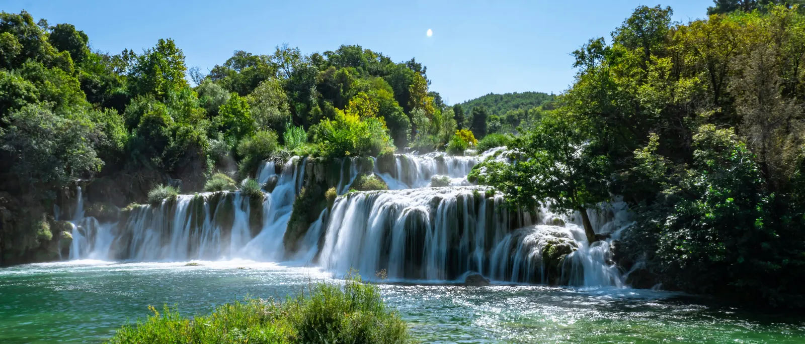
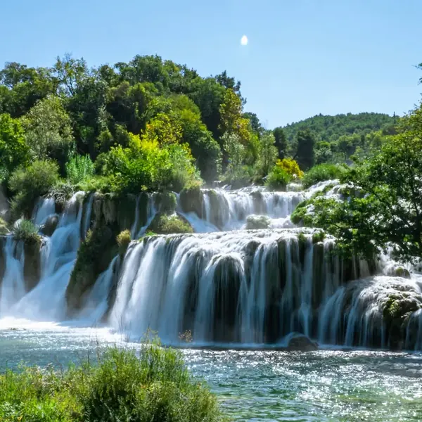
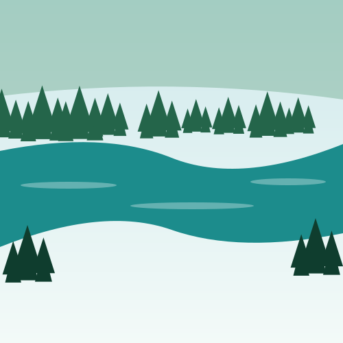
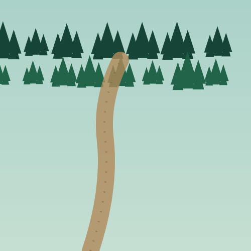
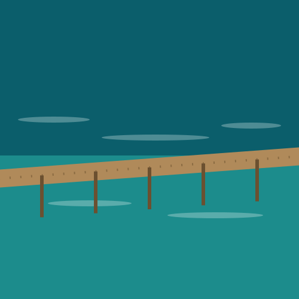

Waterfalls, Without the Long Drive
Krka National Park is built around the Krka River as it drops through a series of travertine cascades, the largest and most famous being Skradinski Buk — a wide curtain of waterfalls reached by wooden boardwalks that wind through the forest and along the water's edge. At under half the driving distance of Plitvice Lakes, Krka makes for a noticeably more relaxed day: less time in the car, more time actually at the park, and still home the same afternoon with energy left over. The riverside town of Skradin, where most visits begin, adds a pleasant stop in its own right — a small stone-built harbour town worth a slow coffee before or after the walk. For visitors short on time, or anyone who's already done the longer trip to Plitvice, Krka is consistently the easier, more flexible choice without giving up the “Croatian waterfalls” experience people come here for.
What's Included
- Private vehicle for your group only — no shared shuttle
- English-speaking driver for the full day
- Hotel or accommodation pickup and drop-off in Split
- All fuel, tolls and parking at the park
- Flexible time inside the park — your driver waits
- Bottled water for the journey
Not included: Krka National Park entrance tickets and the optional Visovac Island boat trip, both purchased separately at the park.
Book This Trip
Fixed price for the day · driver waits at the park · flexible pickup time.
A Typical Day at Krka
-
08:30 – 09:00
Pickup in Split
A later start than Plitvice is comfortable here, given the shorter drive — your driver collects you from your hotel or apartment.
-
~10:15
Arrival Near Skradin
Your driver drops you at the park entrance and confirms a return time. Entrance tickets are purchased at the gate.
-
10:15 – 14:00
Skradinski Buk & Walking Trails
Follow the boardwalks along and across the falls, with time for the optional boat trip to Visovac Island if you'd like to add it.
-
~14:00
Lunch in Skradin
The riverside town makes a pleasant lunch stop before the drive back — several restaurants sit right on the harbour.
-
15:30
Return Drive to Split
Your driver is waiting at the agreed time for the shorter drive back to Split.
-
~16:45
Drop-off in Split
Back at your accommodation by mid-to-late afternoon — plenty of the evening still ahead.
This is a suggested schedule — departure time, lunch stop and time spent in the park are all flexible and arranged directly with your driver.
What You'll See




Common Questions
How long does the Krka National Park day trip take?
The full round trip from Split takes approximately 8–10 hours, including 3–4 hours to explore the park. Krka is closer to Split than Plitvice Lakes, which makes for a slightly more relaxed day.
What is included in the price?
Your private vehicle, English-speaking driver, all fuel and tolls, and hotel/accommodation pickup and drop-off in Split are included. Krka National Park entrance tickets, and the optional Visovac Island boat trip, are purchased separately at the park.
Can I swim at Krka National Park?
Swimming at Skradinski Buk has not been permitted since 2021, as part of the park's conservation efforts. You can still get close to the falls on the wooden boardwalks, and swimming remains possible at some other points along the Krka river outside the protected area.
Is Krka a good alternative to Plitvice Lakes?
Krka is closer to Split, generally quieter, and centres on one spectacular waterfall system rather than a chain of lakes — a good choice if you'd like a shorter day or have already visited Plitvice. Many guests who have time for both say the two parks feel genuinely different rather than repetitive.
Is the boat ride to Visovac Island included?
The Visovac Island boat trip is optional and booked separately at the park, usually departing from Skradin. Let your driver know in advance if you'd like time built into your day for it.